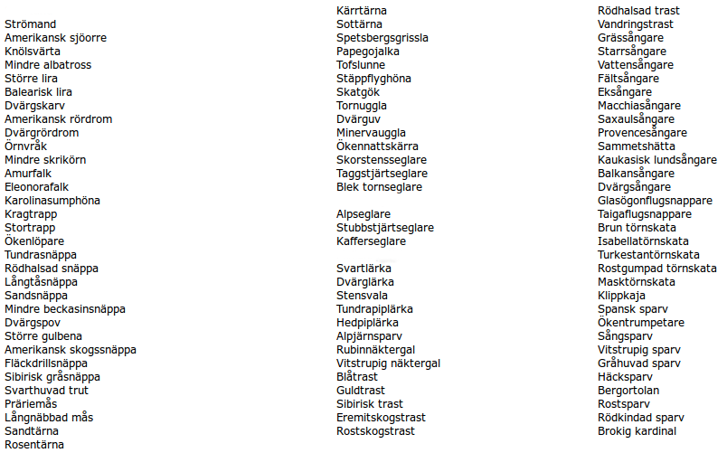
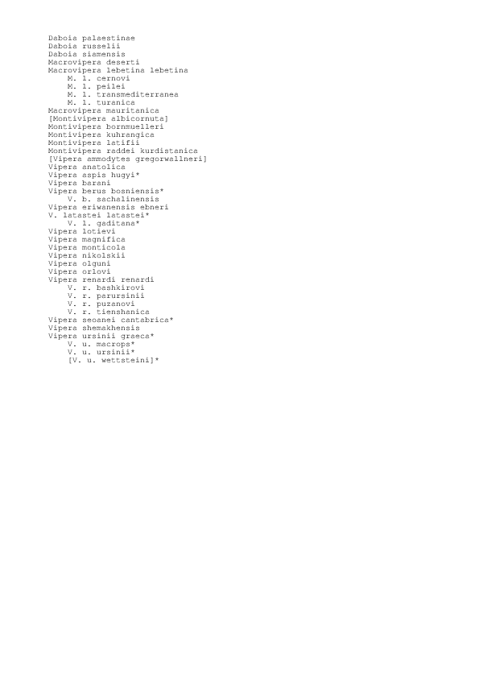

Svenska fågellistan: 81.3% (mål: 85%?)
Senaste fågel-X: Mellanspett, Dendrocopus medis, Lummelunda, Gotland, Jan 2015.
Luckor, Svenska fågellistan:

Huggormslistan: 40% (mål: 85%?)
Senaste huggorms-X: Atlashuggorm, Vipera [latastei] monticola, Marocko, Maj 2016.
Luckor, "Internationella Huggormslistan":
